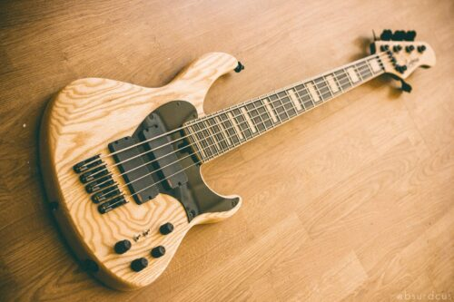

Bajos Eléctricos Ragel
FAQ
- Inicios
- Todo empezó un día que me mandaron a hacer un formulario de html... Pero en este caso, un pequeño taller de bajos
custom. Gran calidad, buen precio, y únicos

- Características
- Todos bajos de madera (Autóctonas de la Península Ibérica, salvo encargos especiales). Todo echo con cariño, con un sonido cálido y limpio
- Especificaciones
- Todo depende del cliente, pero ofrecemos customización de la gran mayoría de características de un bajo eléctrico

Contacto
-
Para contactar en temas de presupuestos, encargos o dudas, rellene el siguiente formulario
Materiales y características
-
Para ver los tipos de madera, pastillas, cuerdas y demás con los que suelo trabajar, mire nuestra lista